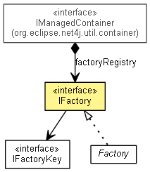

org.eclipse.net4j.util.factory
Interface IFactory
- All Known Subinterfaces:
- IManagedContainerFactory
- All Known Implementing Classes:
- AuthenticatorFactory, ChallengeNegotiatorFactory, CredentialsProviderFactory, ElementWizardFactory, ExecutorServiceFactory, Factory, FactoryDescriptor, FileAuthenticatorFactory, FileUserManagerFactory, NegotiatorFactory, RandomizerFactory, ResponseNegotiatorFactory, TimerLifecycle.DaemonFactory, UserManagerFactory
- public interface IFactory

Creates objects from a string description.
If a factory is registered in an IManagedContainer, the IManagedContainerFactory extension interface
injects that container into the factory for it to reach back into to obtain dependencies.
- See Also:
IManagedContainerFactory
getKey
IFactoryKey getKey()
create
Object create(String description)
throws ProductCreationException
- Throws:
ProductCreationException
getDescriptionFor
String getDescriptionFor(Object product)
Copyright (c) 2011, 2012 Eike Stepper (Berlin, Germany) and others.